Lyndon's Bizarre Dreams:
Lyndon's favorite hobby is sleeping. When sleeping, he likes to have dreams. This includes nightmares as he finds it boring if he doesn't dream of anything.
Lyndon's most hated nightmares are ones where an indestructible being constantly chases him. No matter what he does to the being chasing him, it never goes down.
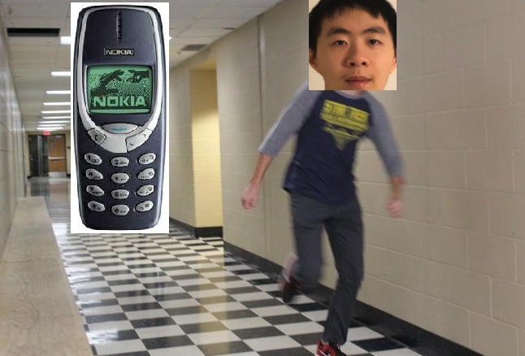Whenever he meets someone new in his dreams, Lyndon often forget what they look like after waking up.
Once in a while, he has a dream where he is sliding down a kiddie-slide and wakes up immediately after from the adrenaline.
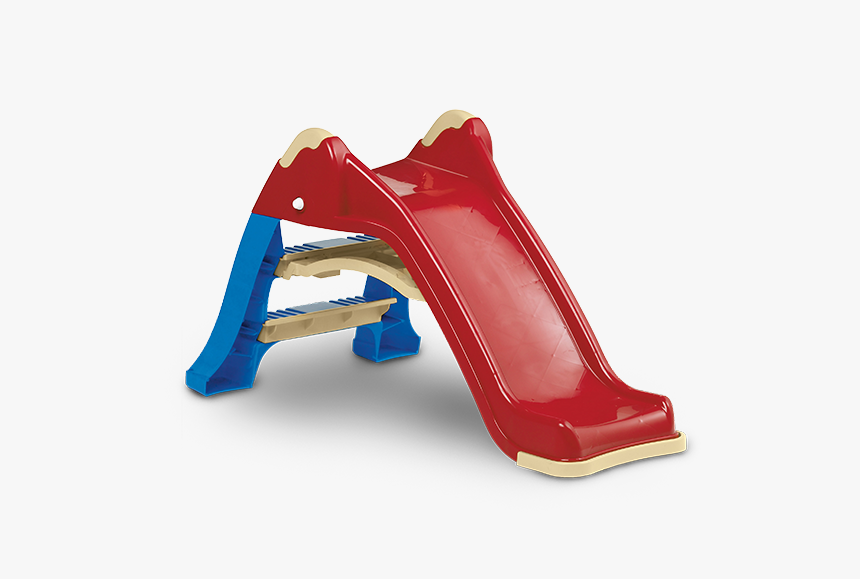When he was young, Lyndon once had a dream of being a chef. He was tasked with making apple sauce. However, the customer specified the apple sauce to be "crunchy". So naturally, young Lyndon tossed in a toy car.
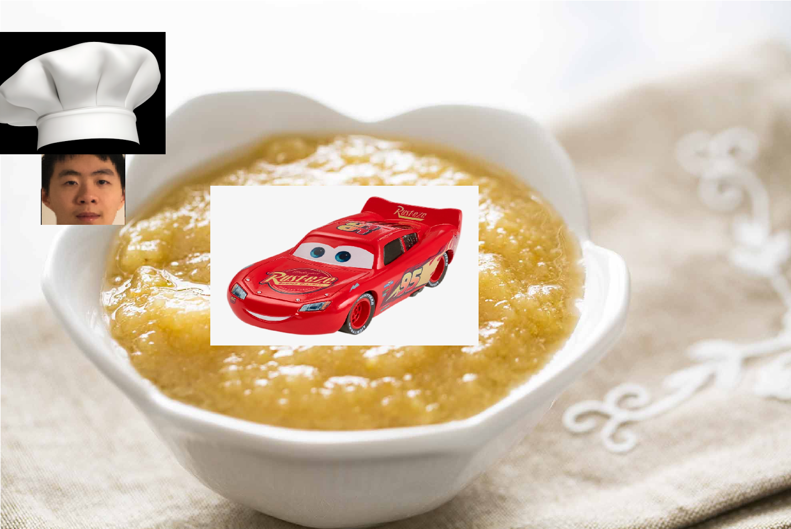Long before Lyndon got his driver's license, he had a dream where he magically spawned in the parking lot in front of CVS with a car. The situation called for him to leave. Of course, he was not able to leave the CVS parking lot.
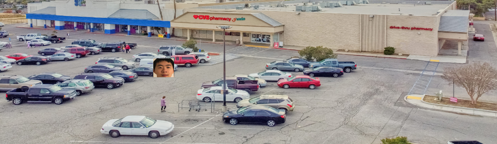During senior year of high school, Lyndon had a nightmare where he got rejected from all colleges. Strangely, the dream happened around September and October, which was before he even applied to any UCs or Cal States. College application normally ends in November.
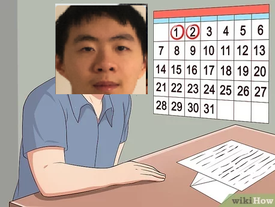The microcontroller lecture was very difficult for Lyndon. So, he eventually had a nightmare, where he did not pass the class. Luckily, in reality, Lyndon barely passed microcontroller. However, he did not dare to list Assembly as a skill on his resume right after. Never again.
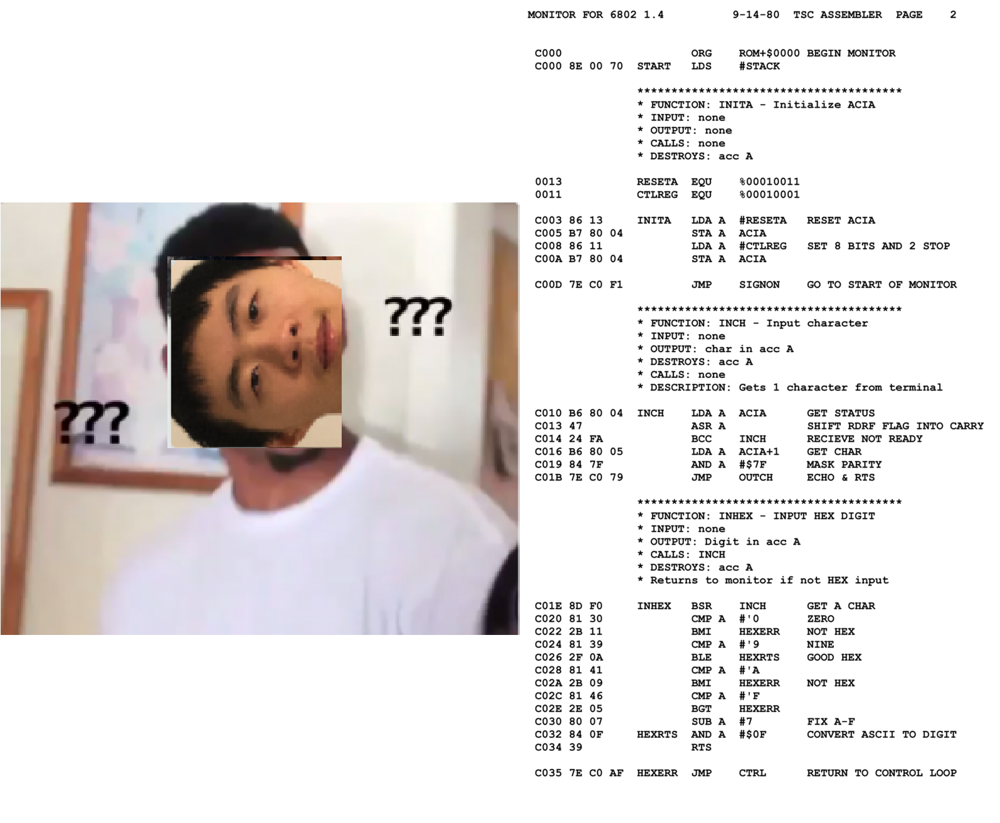Lyndon once had a boring dream where he woke up as a zombie. It was boring because being a zombie didn't entitle anything. Lyndon ended up just going to school as if he was a regular human. The only difference was that now he self-identified as a zombie.
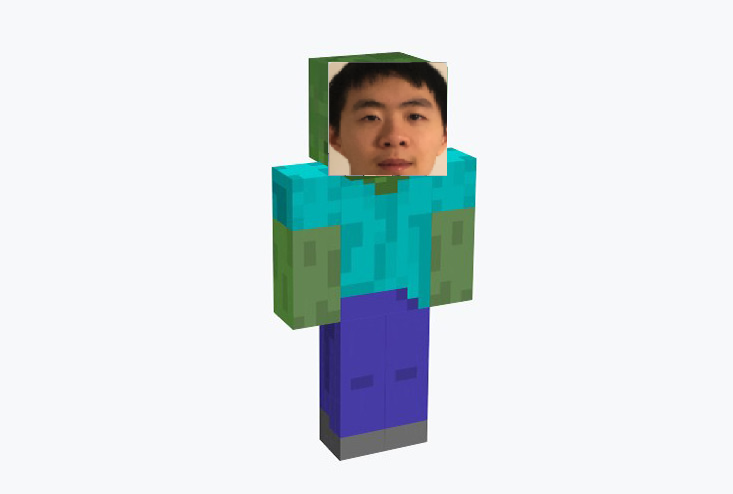Lyndon once had a peaceful dream of him riding a scooter down a hill. Suddenly however, there was a shift in the tectonic plates, and a ramp was formed. Lyndon couldn't stop in time and took the ramp. He tripped and scrapped his knee.
Lyndon once had a dream where he was part of a samurai super team and fought off demons by cutting them down. After a while, the demons were overwhelming Lyndon and his samurai friends, and they were forced to run away. As he was running, Lyndon was running out of breath. To save face and look cool, he stopped running, turned around, and told his samurai friends he will hold the demons back while they escaped. Obivously, Lyndon died and the dream ended.
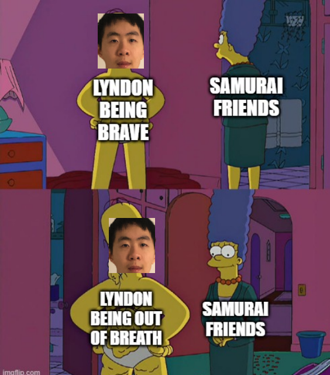When Lyndon was young, he was scaried of those Chinese dancing lions. And so, he one day had a nightmare about them. What makes it more scary was the fact that for some reason his eyes saw things through the leds of a security camera.
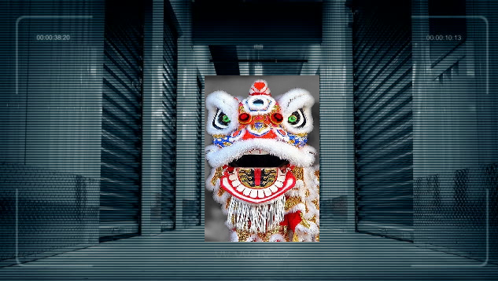In the future, AI went terminator and seek to wipe out humanity. In the dream, Lyndon spent his time trying to fight off the AIs and survive. He crawled around tunnels and conducted guerrilla warfare to protect humanity.
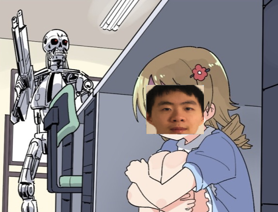Lyndon one day woke up and find the world to resemble the kid-game Pokemon. Instead of there being "pokemons" however, there were dinosaurs. Lyndon's "pikachu" was a giant stegosaurus. Unfortunately, the dream ended before Lyndon got to do a pokemon battle.
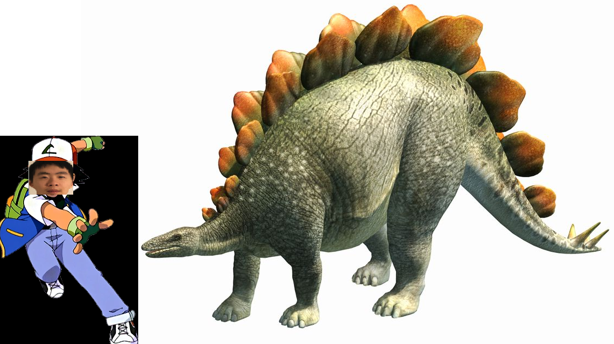